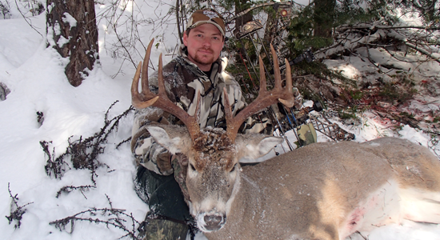
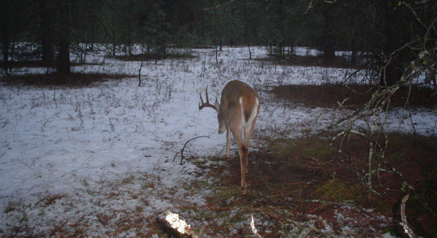
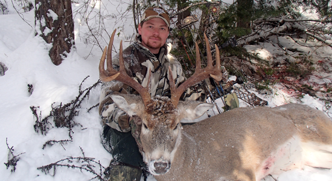
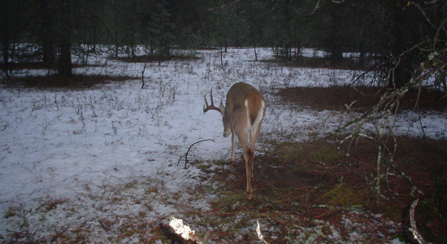

Mountain Whitetail Madness
April 30, 2017
Off the grid, backcountry whitetail hunting isn't a norm. It can be challenging and an adventure unlike no other. Most of my whitetail hunting has taken place in the bottom lands of Eastern Washington state. But, in 2013 I found a new passion in hunting mountain whitetails. Many whitetail hunters over look the dark timber that these elusive bucks call home. Finding mountain whitetails can be difficult though. It often takes years of scouting to pinpoint these deer.

Chad Berry arrowed this mountain whitetail during Washington's late archery season. Chad's buck qualified for the P&Y record book with a score of 125 2/8".
Being able to locate active deer sign in an endless amount of country is the key. Early Spring is a great time to hit the mountains and do some scouting. Walking skid roads is a great method for finding the previous years sign. As soon as the snow starts to melt, you'll discover where bucks have scraped the ground during the rut. Often these bucks use the same scrape lines from year-to-year, so having knowledge of these trails is a must.

By placing a trail camera near a scrape you can determine how many, how big and how often bucks are frequenting the area.
Off the grid, backcountry whitetail hunting isn't a norm. It can be challenging and an adventure unlike no other. Most of my whitetail hunting has taken place in the bottom lands of Eastern Washington state. But, in 2013 I found a new passion in hunting mountain whitetails. Many whitetail hunters over look the dark timber that these elusive bucks call home. Finding mountain whitetails can be difficult though. It often takes years of scouting to pinpoint these deer.
Chad Berry arrowed this mountain whitetail during Washington's late archery season. Chad's buck qualified for the P&Y record book with a score of 125 2/8".
Being able to locate active deer sign in an endless amount of country is the key. Early Spring is a great time to hit the mountains and do some scouting. Walking skid roads is a great method for finding the previous years sign. As soon as the snow starts to melt, you'll discover where bucks have scraped the ground during the rut. Often these bucks use the same scrape lines from year-to-year, so having knowledge of these trails is a must.
By placing a trail camera near a scrape you can determine how many, how big and how often bucks are frequenting the area.